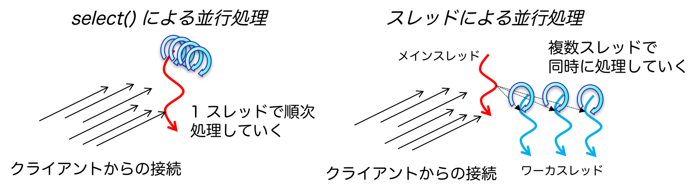

第 13 回情報工学実験 2
本課題の目的は，オペレーティングシステムが提供するネットワーク通信の機能について学び，実際にそれらを使ってネットワークプログラミングを理解することにある．具体的には，Linux を題材に，プログラム同士が通信をするために必要なシステムコールを使ったプログラミングを行う．それだけでなく，簡易なサーバプログラムのコードを読み，それの拡張を施す．今日，我々のコンピュータはネットワーク通信とは切り離せない環境にある．本演習を通じて，スマートフォンや PC 上で動作するプログラムがどのように通信を行っているかを学ぶことができる．
サーバの並行処理
これまでのサンプルプログラムは 1 クライアントを想定したものであった．クライアントのリクエストを受け付け，それを処理し，両プログラムとも終了する．そのため，複数のクライアントが同時にサーバに接続しても，その中から 1 つのクライアントのリクエストのみを処理するだけで，残りのクライアントはサーバへのリクエスト送信を失敗してしまう．複数のユーザが同時にインターネット上のサービスを利用することは当たり前である．特に，TCP 接続の場合には通信路を形成するため，それを維持しなければならない．そのため，サーバには複数クライアントからのリクエストをTCP の通信路を維持しながら並行に処理する機能が必須となる．
そこで今回は複数クライアントからのリクエストを並行的に処理をする手法として 2 つ取り上げる．1 つめは1 スレッドで複数のリクエストを処理する方式，2 つめは複数のスレッドを用意してリクエストを処理する方式である．両者のイメージは次のとおりである．順に説明していく．

1 スレッドで複数のリクエストを処理する方式
1 スレッドで複数のリクエストを扱う場合には，クライアントからの接続がきたら，それらを 1 つずつ順番に処理をしていけばよい．それを効果的に実現できるシステムコールがselect()である．この select() システムコールは，ファイルディスクリプタに対して入出力があったか否かを監視する．もし，監視しているファイルディスクリプタに変化があれば，select()はそれを通知してくれる．引数として監視したいファイルディスクリプタのセット(fd_set型)のポインタを受け取り，その場でブロックする．ファイルディスクリプタに変化が生じると，select() は返る．その際，引数で渡したファイルディスクリプタのセットの値が変更され，該当のファイルディスクリプタ番号に相当するビットが立つ．ファイルディスクリプタのセットを操作するマクロが sys/select.h 内に定義されているので適宜調べて使用することをおすすめする．
以下がサンプルコードである．クライアントは先に掲載した TCP のクライアントプログラム(sample-tcp-client.c)が使用可能である．ダウンロードはこちら．
1 #include <stdio.h>
2 #include <stdlib.h>
3 #include <string.h>
4 #include <errno.h>
5
6 #include <unistd.h>
7 #include <netdb.h>
8 #include <sys/socket.h>
9 #include <sys/types.h>
10 #include <netinet/in.h>
11 #include <arpa/inet.h>
12 #include <sys/select.h>
13
14 #define PORTNUM 8000
15 #define BUFSIZE 4096
16
17 int main(void)
18 {
19 struct sockaddr_in saddr, caddr;
20 int fd1, fd2, ret, len;
21 char buf[BUFSIZE];
22
23 fd_set fds, prev_fds;
24
25
26 /* make server's socket */
27 if ((fd1 = socket(AF_INET, SOCK_STREAM, IPPROTO_TCP)) < 0) {
28 perror("socket");
29 return -1;
30 }
31
32 memset(&saddr, 0, sizeof(saddr));
33 saddr.sin_family = AF_INET;
34 saddr.sin_port = htons(PORTNUM);
35 saddr.sin_addr.s_addr = htonl(INADDR_ANY);
36
37 if(bind(fd1, (struct sockaddr*)&saddr, sizeof(saddr))) {
38 perror("bind");
39 return -1;
40 }
41
42 if(listen(fd1, 5)) {
43 perror("listen");
44 return -1;
45 }
46
47 FD_ZERO(&prev_fds);
48 FD_SET(fd1, &prev_fds);
49 fds = prev_fds;
50 for (;;) {
51 fds = prev_fds;
52 if ((ret = select(FD_SETSIZE, &fds, 0, 0, 0)) <= 0) {
53 perror("select");
54 return -1;
55 }
56
57 if (FD_ISSET(fd1, &fds)) {
58 len = sizeof(caddr);
59 if((fd2 = accept(fd1, (struct sockaddr*)&caddr, &len)) < 0) {
60 perror("accept");
61 exit(1);
62 }
63 FD_SET(fd2, &prev_fds);
64 continue;
65 }
66
67 if (FD_ISSET(fd2, &fds)) {
68 if ((ret = recv(fd2, buf, BUFSIZE, 0)) > 0) {
69 write(1,buf,ret);
70 }
71 close(fd2);
72 FD_CLR(fd2, &prev_fds);
73 }
74 }
75 close(fd1);
76
77 return 0;
78 }
複数スレッドでリクエストを処理する方式
こちらはいくぶん直感的である．クライアントからの接続がきたらスレッドを生成して，その後の処理をスレッドに任せる方式である．具体的には，1 つのスレッド(メインスレッド)が接続を待ち，接続を確立したらスレッド(ワーカスレッド)を生成する．メインスレッドは再び接続を待つ一方で，生成されたワーカスレッドは同時にクライアントからの処理を行う．
以下がサンプルコードである．クライアントは先に掲載した TCP のクライアントプログラム(sample-tcp-client.c)が使用可能である．ダウンロードはこちら．コンパイルするときには``-lpthread''オプションをつけるのを忘れないように．
1 #include <stdio.h>
2 #include <stdlib.h>
3 #include <string.h>
4 #include <errno.h>
5
6 #include <unistd.h>
7 #include <netdb.h>
8 #include <sys/socket.h>
9 #include <sys/types.h>
10 #include <netinet/in.h>
11 #include <arpa/inet.h>
12 #include <pthread.h>
13
14 #define PORTNUM 8000
15 #define BUFSIZE 4096
16
17 void *recv_and_resp(int *fd_socket)
18 {
19 int fd, ret;
20 char buf[BUFSIZE];
21 fd = (int)*fd_socket;
22
23 if ((ret = recv(fd, buf, BUFSIZE, 0)) > 0) {
24 write(1,buf,ret);
25 }
26 close(fd);
27 }
28
29 int main(void)
30 {
31 struct sockaddr_in saddr, caddr;
32 int fd1, fd2, ret, len;
33 pthread_t pt;
34
35 /* make server's socket */
36 if ((fd1 = socket(AF_INET, SOCK_STREAM, IPPROTO_TCP)) < 0) {
37 perror("socket");
38 return -1;
39 }
40
41 memset(&saddr, 0, sizeof(saddr));
42 saddr.sin_family = AF_INET;
43 saddr.sin_port = htons(PORTNUM);
44 saddr.sin_addr.s_addr = htonl(INADDR_ANY);
45
46 if(bind(fd1, (struct sockaddr*)&saddr, sizeof(saddr))) {
47 perror("bind");
48 return -1;
49 }
50
51 if(listen(fd1, 5)) {
52 perror("listen");
53 return -1;
54 }
55
56 for (;;) {
57 len = sizeof(caddr);
58 if((fd2 = accept(fd1, (struct sockaddr*)&caddr, &len)) < 0) {
59 perror("accept");
60 exit(1);
61 }
62
63 if (pthread_create(&pt, NULL, (void*)(recv_and_resp), (void*)&fd2) < 0) {
64 perror("pthread_create");
65 return -1;
66 }
67 pthread_detach(pt);
68 }
69
70 return 0;
71 }
|